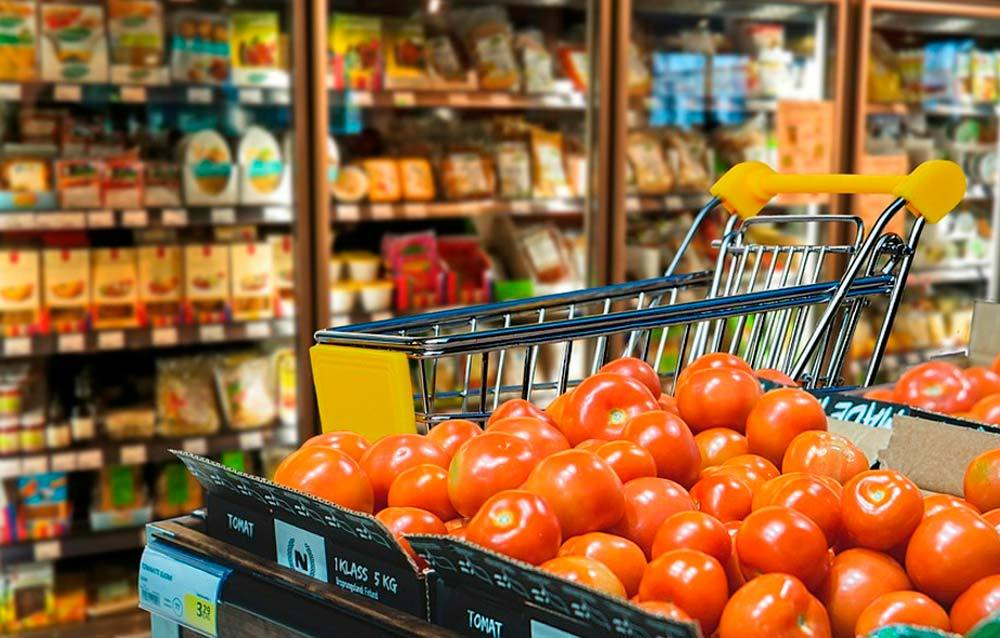

Construcciòn
El proyecto está construido utilizando tecnologías específicas para el desarrollo web y la gestión de bases de datos. Python se emplea como lenguaje de programación principal, y se utiliza el framework Flask para el desarrollo del backend de la aplicación. Flask es conocido por su simplicidad y flexibilidad, ideal para proyectos de tamaño mediano que buscan agilidad en el desarrollo.